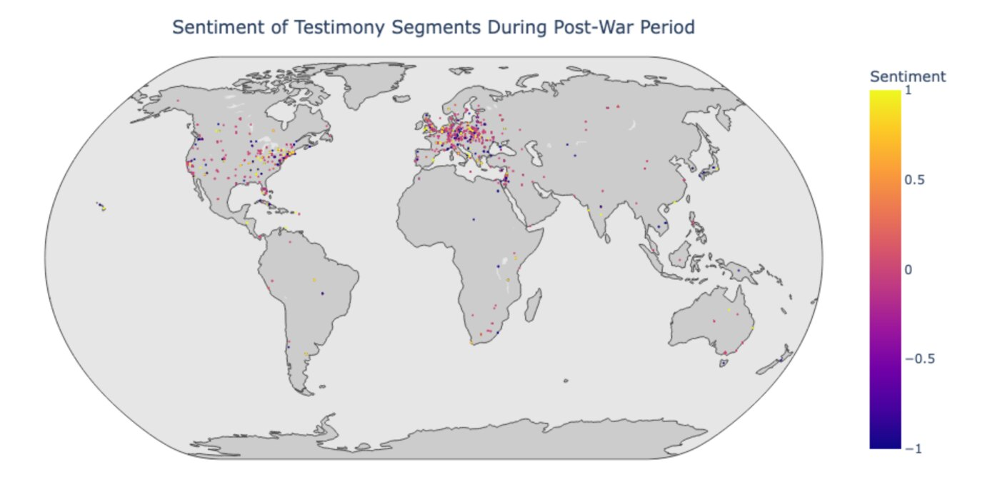

Geographies of Affect was a UCLA Digital Humanities capstone that asked a hard question: could computational tools trace how survivors' emotions shift across the places in their stories — the camps, the routes of flight, the postwar homes — without flattening memory into a single number? It drew on nearly 1,000 English-language oral histories from the USC Shoah Foundation's Visual History Archive.
Context
Holocaust testimony is some of the most emotionally layered material there is. A survivor recalling a single place might hold grief, defiance, tenderness, and numbness in the same breath. The premise of the project — and its risk — was to bring sentiment analysis and mapping to exactly that kind of material: to ask what patterns emerge when you track emotion across narrative time and geographic space, while staying honest about what those tools can and cannot see.
My role
I focused on the sentiment-analysis side of a three-person team — Laurel Woods led the data visualization and Ulysses Pascal led the mapping. I helped shape the research framework, did a large share of the manual annotation, evaluated and compared the NLP approaches, fine-tuned a GPT-2 model, and contributed to the geocoding pipeline.
Approach
We paired close, manual annotation with computational methods in Python (NLTK, spaCy, scikit-learn), plus GPT-2/GPT-3 and named-entity recognition to extract and geocode the places named in each testimony.
To choose a sentiment method rather than assume one, we compared three families head-to-head: dictionary-based tools (VADER, TextBlob), linear classifiers (Naive Bayes, Logistic Regression), and transformer models. I hand-annotated 864 testimony segments for sentiment to build a grounded evaluation set, and we extracted and geocoded 144,000+ place entities to anchor emotion to geography.
Findings
Transformer models substantially outperformed the traditional methods — but the more important finding was about limits. Sentiment in Holocaust testimonies is often ambiguous, multidimensional, and resistant to categorical classification: memories of camps, refuge, and postwar life carried layered, contradictory emotions that no single label captured well.
We built visualizations that tracked those emotional shifts across narrative time and across the geography of each testimony — a way to see, not just measure, how affect moves through a story.

Reflection
This project taught me as much about the limits of computational tools on historically complex, human material as about the methods themselves. It made me careful about what a metric can quietly erase — and that instinct, to design for meaning and not just measurement, is a big part of what pulled me toward HCI.